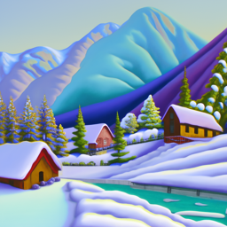

an oil painting of a snowy mountain village
a man wearing a hat

a rocket ship
This project is split into two parts with the first one covering usage of diffusion models and how to manipulate denoising processes to get results we want. The second part covers UNets and how to initialize their structure and models to denoise images.
DeepFloyd is a text-to-image model that generates images based on text prompts. The prompt "a high quality photo" is used as a neutral, unconditional input, allowing the model to generate random images without specific guidance.
This helps the model apply the diffusion process to transform noisy images into realistic ones. We also provide conditional inputs, which help determine the contents of the image that are generated.
For this project I used seed = 3898
The images below were generated, with their caption as their prompt and differing num_inferences.
Stage 1 with num_inference_steps=20:
|
an oil painting of a snowy mountain village |
a man wearing a hat |
a rocket ship |
Stage 2 with num_inference_steps=20:
|
an oil painting of a snowy mountain village |

a man wearing a hat |

a rocket ship |
Stage 1 with num_inference_steps=10:
|

an oil painting of a snowy mountain village |

a man wearing a hat |

a rocket ship |
Stage 1 with num_inference_steps=30:
|
an oil painting of a snowy mountain village |

a man wearing a hat |
a rocket ship |
It is worth mentioning that every image has been upscaled to 256x256 when every stage 1 output is actually 64x64. For later parts of this project, all outputs will be originally 64x64.
The outputs to seem to heavily reflect the prompt that was inserted into the model. Stage 2 takes significantly longer to run as the images are exponentially larger in size.
When num_inference_steps increases, the edges become more defined and the finer details can be made out. When num_inference_steps is lower, there is largely more visible amount of blurring.
In a diffusion model, we can start with a clean image and progressively add noise over time until it becomes pure noise. The model reverses this process by predicting and removing the noise, gradually denoising the image.
We can also generate images, by starting with pure noise and iteratively removing it, refining the image step by step until a clean image appears. We can manipulate the amount of noise that is added to each step.
The forward process entails of noising an image from a Gaussian distribution with a specific mean and variance at each timestep.
The variable alphas_cumprod tracks the noise level, where smaller t values correspond to cleaner images, and larger t values indicate more noise.
The function forward(im, t) depicts the image im at step t.

Berkeley Campanile |
Noisy Campanile at t=250 |

Noisy Campanile at t=500 |

Noisy Campanile at t=750 |
A strategy we can employ to denoise an image is to use Gaussian blur filtering. To do this we simply take the image and insert it into the built in torch gaussian_blur function which will essentially smoothen out the noise.
This method will prove to be not super accurate, as it is bound to lose information and has no real way of making it up.
|
Noisy Campanile at t=250 |
Noisy Campanile at t=500 |
Noisy Campanile at t=750 |
|
Gaussian Denoise at t=250 |
Gaussian Denoise at t=500 |
Gaussian Denoise at t=750 |
We can train the diffusion model with a UNet to denoise the image. The UNet is conditioned on a noise level and uses a timestep as an additional input to predict and remove Gaussian noise to recover images closer to the original.
Since the model was trained with text conditioning we also need a text prompt embedding, which is provided for the prompt "a high quality photo".
|
Noisy Campanile at t=250 |
Noisy Campanile at t=500 |
Noisy Campanile at t=750 |
|
One-Step at t=250 |
One-Step at t=500 |
One-Step at t=750 |
Original Campanile
From the previous part we can see that UNet is significantly more successful at denoising the image compared to standard Gaussian blur filtering. However it still fails to denoise when their is an excessive amount of noise.
A way we can counteract this is by implementing iterative denoising. We can specify timesteps where we would denoise the image at a certain timestep and use information from the denoised image at the previous timestep and the initial image.
We can skip steps to make the process faster and essentially runs the previous process multiple times using other previous output.
|
Noisy Campanile at t=90 |

Noisy Campanile at t=240 |
Noisy Campanile at t=390 |
Noisy Campanile at t=540 |
Noisy Campanile at t=690 |
|
Original |
Iteratively Denoised |
One-Step Denoised |
Gaussian Blurred |
We can essentially generate random images by inserting random noise as the initial image. We set i_start to 0 and set the prompt to "a high quality photo".
|
Sample 1 |
Sample 2 |
Sample 3 |
Sample 4 |
Sample 5 |
The randomly generated images from the previous task were not very good in quality and lack substance. We can utilize CFG to greatly improve the quality of the images at the cost of image diversity.
We can calculate estimated noise e = e_uncond + gamma * (e_cond - e_uncond)
Where gamma controls the strength of the CFG.
In the following examples we set "" as the unconditional prompt embed, and leave the prompt embed as "a high quality photo".

Sample 1 with CFG |
Sample 2 with CFG |
Sample 3 with CFG |
Sample 4 with CFG |
Sample 5 with CFG |
As we can see with the process of generating random images. The more noise there is an image, the more liberty the Diffusion model has in deciding what the final image will look like.
If we run the iterative denoiser by inserting the original image forwarded to different noise levels, we can get a range of images, gradually beginning to look like the original.
This method is labeled as the SDEdit algorithm which takes the original image, noises it a little, and then forces it back into the image without conditioning.
|
SDEdit with i_start=1 |
SDEdit with i_start=3 |
SDEdit with i_start=5 |
SDEdit with i_start=7 |
SDEdit with i_start=10 |
SDEdit with i_start=20 |
Campanile |
Following the same SDEdit algorithm, we can experiment with the creativity of the diffusion model by inserting images from the web and hand-drawn images that may not resemble anything at all.
The Diffusion model will denoise these and create something from seemingly nothing.
|
SDEdit with i_start=1 |
SDEdit with i_start=3 |
SDEdit with i_start=5 |

SDEdit with i_start=7 |
SDEdit with i_start=10 |
SDEdit with i_start=20 |
Donkey Kong |
|
SDEdit with i_start=1 |
SDEdit with i_start=3 |
SDEdit with i_start=5 |
SDEdit with i_start=7 |
SDEdit with i_start=10 |
SDEdit with i_start=20 |
Original Sketch |
|
SDEdit with i_start=1 |
SDEdit with i_start=3 |
SDEdit with i_start=5 |
SDEdit with i_start=7 |
SDEdit with i_start=10 |

SDEdit with i_start=20 |
Original Sketch |
We can use a binary mask that overlays the original image to determine a section(s) of the original image that we want to remain consistent, whereas the rest is up to change.
This can be done by doing the standard iterative denoising process, however at the end of every loop we force only the masked pixels to be changed from the original image.

Campanile |

Mask |

Hole to Fill |
Campanile Inpainted |
The colors tend to become a bit distorted as the process continues as it tries to iterate on only the noisy location which is separate from the rest of the image that is not masked.
As a result we also need to run this process a few times in order to produce desirable results.

Meme |
Mask |
Hole to Fill |
Meme Inpainted |
|
Laptop |

Mask |

Hole to Fill |
Laptop Inpainted |
The meme example is honestly really not great, but I was curious how well the Diffusion model and the mask would work on an area that literally has no information within it.
Color artifacts can clearly be seen where the masked area is shades darker than the rest of the image, however the affects of the white color can be seen in the fact that the inpainting is entirely grayscale.
We can perform SDEdit as seen earlier but with a prompt conditional. By changing "a high quality photo" with something like "a rocket ship", we can greatly influence the output.
|
Rocket Ship at noise level 1 |
Rocket Ship at noise level 3 |
Rocket Ship at noise level 5 |
Rocket Ship at noise level 7 |

Rocket Ship at noise level 10 |
Rocket Ship at noise level 20 |
Campanile |
|
Rocket Ship at noise level 1 |
Rocket Ship at noise level 3 |

Rocket Ship at noise level 5 |
Rocket Ship at noise level 7 |
Rocket Ship at noise level 10 |
Rocket Ship at noise level 20 |
Donkey Kong |
|
Rocket Ship at noise level 1 |
Rocket Ship at noise level 3 |
Rocket Ship at noise level 5 |
Rocket Ship at noise level 7 |
Rocket Ship at noise level 10 |
Rocket Ship at noise level 20 |
Pencils |
We can create optical illusions where an image resembles one prompt when seen upright, and another prompt when seen upside down.
We can do this by getting the noise estimate of the image upright and upside down utilizing the UNet.
We can perform CFG accordingly on these prompts in both directions and get the average of these noise estimates.
Using this final noise estimate we can produce these anagrams.
an image of "an oil painting of people around a campfire" and "an oil painting of an old man" when flipped
|
An Oil Painting of People around a Campfire |
An Oil Painting of an Old Man |
an image of "a photo of a hipster barista" and "an oil painting of an old man" when flipped
|
A Photo of a Hipster Barista |
An Oil Painting of an Old Man |
an image of "a photo of the amalfi cost" and "a photo of a dog" when flipped
|
A Photo of the Amalfi Cost |
A Photo of a Dog |
We can use a similar process to visual anagrams to create hybrid images like in project 2. We can get the noise estimates from all prompts and then insert one into a low pass filter and the other into a high pass filter and add them together to get our noise estimate.
|
Hybrid Image of a Skull and a Waterfall |
Hybrid Image of an Old Man and a Snowy Mountain Village |
Hybrid Image of an Old Man and People Around a Campfire |